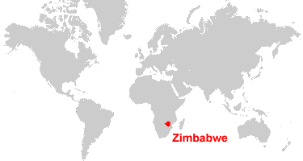
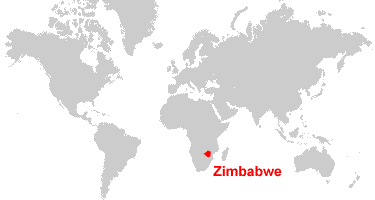

ZIMBABWE
 

- Area: 390.757 km2
- Population: 14.4 million
- Capital: Harare
- Zimbabwe Dollar
- Language: Shona
- Fun fact: before the Zimbabwean national anthem was adopted, it was used as a school choir competition song.
Top 3 Places to Visit in Zimbabwe
1. Victoria Falls

The largest natural waterfall in the World. It is one of the greatest and most popular attractions in the continent of Africa. It is located on the border between Zimbabwe andn Zambia on the Zambezi river. The noise of the fall can be heard from up to 40 kilometres away, and the mist of the falling water rises to over 400 metres.
2. Lake Kariba

Lake Kariba is the world's largest man-made lake- four times as large as the Three Gorges Dam. It was filled between 1958 and 1963 and includes serveral islands such as Antelope Island and Mashape Island. Animals which inhabit the lake range from Nile crocodiles, hippopotamus and tiger fish.
3. National Heroes Acre Monument

It is a burial ground and national monument located in Harare, the capital of Zimbabwe. It commemorates those who died during the Rhodesian Bush War and contemporary Zimbabweans who show dedication and committment to their country.